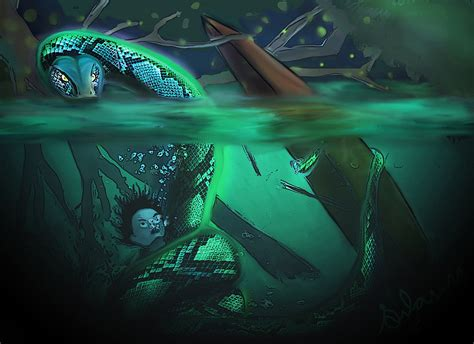

The legend of the boitatá originates with Brazil’s native Tupi people. The word means “serpent of fire” or “fiery thing,” depending on how you translate the Old Tupi mboî-tatá. Anchieta described it as a “fiery thing” in 1560, but today the boitatá is commonly portrayed as a fiery snake. According to the legend, there was once a long period of darkness when the sun did not shine and a deluge myth flooded the earth. These conditions killed many animals and forced the beasts to flee their natural habitat. Among the displaced survivors was the boiguaçu, a giant cave anaconda. Emerging from its lair, the boiguaçu began to eat the eyes of the dead, which shone brightly in the darkness and made for tasty delicacies. As the snake ate more and more of these delicious, shiny eyes, its body began to shine, too, but the eyes-only diet steadily weakened it, and it perished… in a blaze of glory. For, upon its death, all the light collected inside it escaped to the sun, and the dark days were finally over.
There must have been some magic in all those eyeballs, because the boitatá lived on in spirit. It inhabits the Amazon jungles to this day, often appearing at night as nothing but two glowing, fiery eyes. Some say it can breathe fire as well, an ability it uses to incinerate people who harm the rainforest by chopping trees down or starting fires. Others say it can actually disguise itself as a tree trunk, then roast alive any lumberjack who comes to cut it down. Oh, and it can also blind you and make you insane if you gaze into its eyes. There are other versions of the legend that describe the boitatá as a giant, fiery bull who hunts the hunters, and yet others that associate it with almas penadas – souls that are cursed for various reasons, from immorality to dealing dishonestly with the devil. Many descriptions of the boitatá legend connect it with ignis fatuus, or that fiery phenomenon known as the will-o’-the-wisp. There is some overlap between the legends of the boitatá and the boiúna, an evil black snake that is said to take a variety of forms, attack and devour people, and use its flaming eyes to lead boats to their